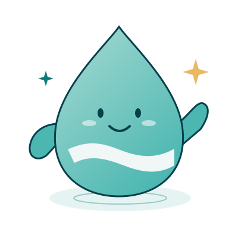

| Step | Model | Est. |
|---|---|---|
| Bounded retry queue | Sonnet | $0.42–1.25 |
| Migration: retry_count | Opus | $2.04–7.09 |
| Fix typo in README | Haiku | $0.03–0.11 |
lake/plan-approval 1 plan approved for its current version

FREE · OPEN SOURCE · FOR AI-CODING TEAMS
lake-gate saves your coding agent's plan in the repo, prices each step, and holds implementation until a teammate approves that exact version. Edit the plan and the yes expires.
$ npx lake-gate init
A Claude Code hook and a GitHub Action. MIT licensed. No Lake server, no account, no telemetry.
● Write(src/webhooks/queue.ts) ⎿ Blocked by lake-gate plan add-webhook-retries version 86eab4d0 is not approved yet. A teammate comments: /lake approve add-webhook-retries@86eab4d0
| Step | Model | Est. |
|---|---|---|
| Bounded retry queue | Sonnet | $0.42–1.25 |
| Migration: retry_count | Opus | $2.04–7.09 |
| Fix typo in README | Haiku | $0.03–0.11 |
Illustrative output. The estimates are heuristic ranges, not quotes.
01 · WHY
Long AI plans are tiring to read, so they get a quick "approve". Usually that's the author approving their own agent.
The quick task nobody reviews is often where the drift starts, and the bill.
The plan someone said yes to in Slack isn't the plan the agent ran an hour later.
These are patterns we keep seeing in public threads and conversations with developers. They're not survey numbers.
02 · HOW IT WORKS
When Claude Code leaves plan mode, a hook writes .lake/plans/<id>.md with a version hash. Cursor or Codex: npx lake-gate plan plan.md.
A PreToolUse hook denies edits and non-read-only shell commands. The agent can still read, search and explain.
On the PR: /lake approve id@version. The author and bots don't count, and neither do read-only users.
The Action sets lake/plan-approval on the PR. Edit the plan and it turns red until someone approves the new version.
03 · ESTIMATES
Every plan gets a complexity rating and a recommended model per step, with a cost range. Reviewers see what they're paying for before they say yes. Small, cheap plans can skip review with an auto-approve threshold, which starts in shadow mode.
Ranges come from keyword heuristics and public list prices, and you can edit both in .lake/config.json. It's a forecast, not a cap. On a subscription you spend quota, not dollars.
04 · LIMITS
.github/ and .lake/config.json with CODEOWNERS.
05 · DESIGN PARTNERS
We're looking for a few teams to try lake-gate on real work and tell us where it gets in the way. Free, and no sales call needed.
This opens an email to the Lake research team. We only use your address to reply to you.
noah approved v86eab4d0
/lake approve add-webhook-retries@86eab4d0